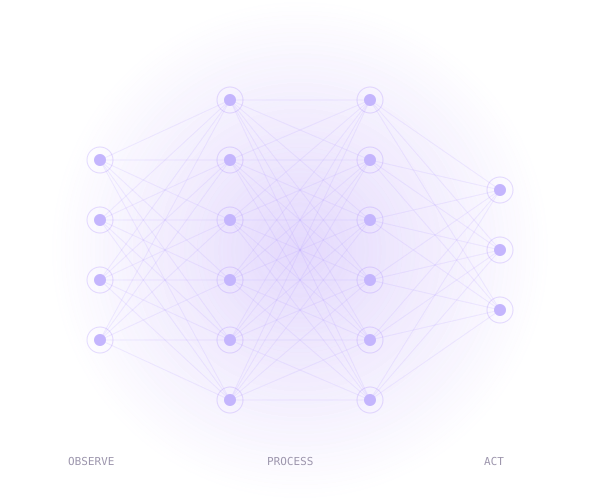

AI & BACKEND DEVELOPER
Learning agents.
Finding patterns.
Building systems.
I'm EternalSecond. I explore how machines learn
and build the Python systems around them.
⌘ PyCharm❄ NixOS⌁ Python
NEURAL FIELD / 001● EXPERIMENTAL

INPUT → REPRESENTATION → ACTIONILLUSTRATION
ENVIRONMENT / PROCEDURAL 2DDOUBLE DQN
01 — REINFORCEMENT LEARNING
DeepRFModel
A Double DQN agent for navigating a procedural 2D obstacle course. An experiment in perception, rewards, and decision-making.
PyTorchPygameDouble DQN
- THE BUILD
- 16 raycasting sensors, experience replay, a target network, and reproducible course seeds.
- PROJECT OUTPUT
- Training and evaluation CLI, resumable checkpoints, CSV metrics, and training charts. No pretrained policy or benchmark results published.
02 — REINFORCEMENT LEARNING
Geometry Dash RL
A numerical, Geometry Dash–inspired environment for training jumping agents without screenshots or a game window.
GymnasiumStable-Baselines3PPO
- THE BUILD
- 20-value observations, two actions, parallel environments, checkpoints, and TensorBoard logging.
- PROJECT OUTPUT
- A trainable simulator with physics and reproducibility tests. Live-game integration is experimental; simulator policies do not automatically transfer.
NOTEBOOKS / UKRAINIAN03
01 Fundamentals ↗
02 Gradient boosting ↗
03 Deep learning ↗
03 — MACHINE LEARNING / EDUCATION
Machine Learning Course
A practical introduction to machine learning in Ukrainian, from scikit-learn fundamentals to deep learning with PyTorch.
Jupyterscikit-learnPyTorch
- THE BUILD
- Classification, regression, clustering, boosting, and neural networks, with validation and data leakage in focus.
- PROJECT OUTPUT
- Three notebooks with runnable examples and exercises. Created with AI assistance from Claude, as documented in the repository.
02 / BEHIND THE CODE
Curiosity across
data & systems.
I enjoy working with models that learn from examples, uncover structure, and improve through interaction.
My interests span supervised, unsupervised, and reinforcement learning, alongside Python backend development with FastAPI and Django.
01Supervised learning
Classification, regression, and generalization from labeled examples.
02Unsupervised learning
Clustering, representations, and hidden patterns in data.
03Reinforcement learning
Agents, reward design, and decisions in simulated environments.
04Python backend
APIs and application logic that connect models to software.
03 / EVERYDAY TOOLKIT
PythonPyTorchTensorFlowFastAPIDjangoGit